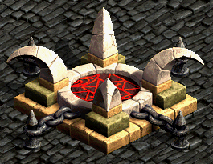
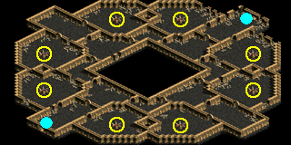
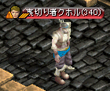

一般クエスト Lv300～399
| スケジュール報告書 | |
|---|---|
ビガプール教会のアンジェラ修道女の代わりに神聖都市アウグスタ教会にいるジョセフ・ランドルン3世に、ビガプール教会のスケジュール報告書を渡そう。 ジョセフ・ランドルン3世が渡された報告書の内容を検討している。ちょっと待ってからまた話かけてみよう。 何か深刻な事が進行されているようだ。話を最後まで聞いてみよう。 スウェブタワー17F, 18F, 19F, 20Fのレッドアイ幹部の身体を探ろう。困難な場所ほど神父たちの足跡を見つけやすい。神父たちの指輪5個を探そう。 残念ながら5人ともレッドアイ幹部に殺されたようだ。この事実をジョセフ・ランドルン3世に伝えよう。 |
|
| 受諾場所 | ビガプール教会 アンジェラ修道女(13.14) |
| 受諾条件 | Lv300 |
| 報酬 | [選択肢1] 経験値1万 [選択肢2] 経験値70万 |
| アウグスタ大聖堂 | 連作クエスト スケジュール報告書 → 教会支援 ジョセフ3世(17.24)へ [選択肢1]引き受けることは出来かねます。 → 終了 (経験値1万) [選択肢2]喜んでお手伝いいたします。 → クエスト継続 |
| スウェブタワー １７～２０Ｆ |
[選択肢2]喜んでお手伝いいたします。 を選択した場合の続き レッドアイ幹部(Lv300)を倒す |
| アウグスタ大聖堂 | ジョセフ3世へ、教会支援に続く (経験値70万) |
| 教会支援 | |
|---|---|
名前のない崩れたタワー5Fのブラックメイジが教会支援金を自分らの魔法研究のために奪った。奪われた教会支援金を取り戻そう。 教会支援金を取り戻した。ビガプール教会のブレイグ神父に教会支援金を渡そう。 |
|
| 受諾場所 | アウグスタ大聖堂 ジョセフ3世(17.24) |
| 受諾条件 | Lv300 |
| 報酬 | 経験値20万 |
| 名も無い崩れた塔 ５Ｆ | 連作クエスト スケジュール報告書 → 教会支援 ブラックメイジ(Lv250)を倒す |
| ビガプール教会 | ブレイグ神父(9.15)へ |
| 一体誰が･･･？ | |
|---|---|
誰かが機密を漏らしていると考えているタールが、名も無い崩れた塔 Ｂ６にある祭壇に音声を記録することができる魔法音声呪文書を設置してほしいという。 魔法音声呪文書をすべて設置した。名も無い崩れた塔 Ｂ６にいるタールのところに戻ろう。 魔法音声呪文書に情報が保存されるまで、名も無い崩れた塔 Ｂ６を見回っている巡察者を12匹を退治しよう。 すべての巡察者を退治した。名も無い崩れた塔 Ｂ６にいるタールのところに戻ろう。 タールが人の気配を感じたと言う。名も無い崩れた塔 Ｂ６にある祭壇の8所に設置した魔法音声呪文書を確認してみよう。 魔法音声呪文書に保存されていた情報を名も無い崩れた塔 Ｂ６にいるタールに伝えてあげよう。 |
|
| 受諾場所 | 名も無い崩れた塔 Ｂ６ タール(51.23) |
| 受諾条件 | Lv340 |
| 報酬 | 経験値213万1000 |
| 名も無い崩れた塔 Ｂ６ | 連作クエスト 一体誰が･･･？ → 成敗 祭壇(12.34)(12.58)(37.9)(37.82)(59.9)(59.82)(84.33)(84.58)をクリック   タールへ 巡察者(Lv350)を12匹倒す タールへ 祭壇(12.34)(12.58)(37.9)(37.82)(59.9)(59.82)(84.33)(84.58)をクリック タールへ |
| 成敗 | |
|---|---|
機密を漏らしていた裏切り者クホルが、ソーサラーに渡した監視団名簿と配置リストを奪おう。ソーサラーは、まだ名も無い崩れた塔 Ｂ６にいるはずだ。 監視団名簿と配置リストを奪った。名も無い崩れた塔 Ｂ６にいるタールのところに戻ろう。 裏切り者クホルは気が付いて逃げ出してしまった。しかし、名も無い崩れた塔 Ｂ６は必ず通るという。モンスターたち退治していれば、裏切り者クホルが現われるはずだ。裏切り者クホルが、先の階に逃げる前に退治しよう。 裏切り者クホルを逃してしまい、ミッションに失敗した。名も無い崩れた塔 Ｂ６にいるタールのところに戻ってミッションをやり直そう。 裏切り者クホルを退治した。名も無い崩れた塔 Ｂ６にいるタールに裏切り者クホルの印を渡そう。 |
|
| 受諾場所 | 名も無い崩れた塔 Ｂ６ タール(51.23) |
| 受諾条件 | Lv340 |
| 報酬 | 経験値54万 |
| 名も無い崩れた塔 Ｂ６ | 連作クエスト 一体誰が･･･？ → 成敗 ソーサラー(Lv350)Zinを倒す タールへ モンスターを倒していると、「クホルが動き回る音が聞こえる。」とログが表示され、 裏切り者クホル(Lv340)Zinが出現、倒す。 B5へのポータル付近に湧き、B7へのポータル付近へゆっくり移動して消滅。 消滅する前に倒せなかった場合、タールへ戻ってやり直しになる。  タールへ |
| 水産物輸送 | |
|---|---|
フォーリン望楼地下の拷問技術者を倒して、アイスボックスを獲得しよう。 プシケに、アイスボックスを渡そう。 |
|
| 受諾場所 | 港街シュトラセラト プシケ(59.130) |
| 受諾条件 | Lv370 |
| 報酬 | 経験値175万 |
| フォーリン望楼 地下 | 拷問技術者(Lv370)Zinを倒す |
| 港街シュトラセラト | プシケへ |
[参考] Yotsuba Quest DataBase